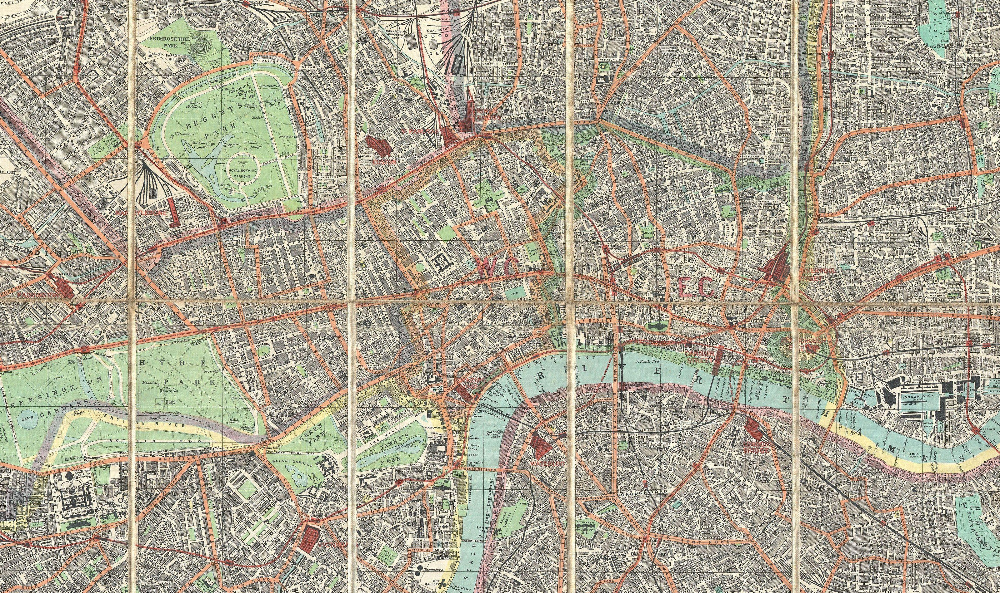

Plan de poche George Philip & Son, 1895
Carnet
Résultats d'analyses
Post Office London Directory, 1895
Extrait de l'annuaire de Kelly. Cherchez un nom, une profession ou une rue.
Une enquête de Sherlock Holmes
Londres, novembre 1895
Casque ou enceintes recommandés. Plein écran : touche F11 (ou ⌃⌘F sur Mac).
Vous êtes Sherlock Holmes et le Dr Watson. Un homme est mort, un autre sera pendu si vous vous trompez. Vous avez environ une heure et demie.
Découvrir qui a tué Cornelius Marsh, comment, et pourquoi. Quand vous serez prêts, vous répondrez à six questions, vous désignerez un coupable, puis vous déciderez de son sort. Il n'y a qu'une vérité, mais deux façons de la servir.
La carte montre les adresses que vous connaissez. Pour aller ailleurs, écrivez dans « Se rendre à… » un nom ou une adresse trouvés dans vos documents ou dans l'annuaire de 1895. Si l'adresse mène quelque part, le fiacre vous y conduit. Chaque trajet est compté : Holmes, lui, se déplace peu et à bon escient.
Dans chaque lieu, lisez la description, examinez ce qui peut l'être et interrogez les personnes présentes. Face à un témoin, vous pouvez l'observer (les détails que Holmes remarque), écouter sa déposition, et surtout lui montrer une pièce de votre dossier. Certains ne parlent que devant la bonne preuve.
Tout ce que vous ramassez va dans le dossier : lettres, journaux, registres, enregistrements. Ouvrez les documents, agrandissez-les, lisez-les vraiment. La loupe et le petit miroir de poche sont là pour ça. Rien n'est décoratif.
À Baker Street, vous trouverez la table de chimie de Holmes (pour analyser des échantillons), son index de coupures et de fiches (cherchez un nom, un mot) et sa bibliothèque.
Le carnet est à vous : notez-y vos hypothèses, les heures, les noms. Les résultats de laboratoire s'y inscrivent tout seuls. Un vrai carnet de papier à côté de l'écran fait aussi très bien l'affaire.
Bloqués ? La rubrique Indices propose, pour chaque étape de l'enquête, trois coups de pouce de plus en plus précis, puis la solution de l'étape. Rien ne s'ouvre sans votre accord. Chaque indice coûte un peu de votre score final.
Partagez-vous le travail : l'un lit les documents à voix haute, l'autre tient le carnet et la carte. Échangez souvent. Holmes pense mieux quand Watson le contredit.
Chaque lieu a son ambiance. Certains documents sont des enregistrements : écoutez-les en entier, au calme, et plus d'une fois.
Baker Street, samedi 16 novembre 1895, sept heures du matin

Plan de poche George Philip & Son, 1895
Extrait de l'annuaire de Kelly. Cherchez un nom, une profession ou une rue.